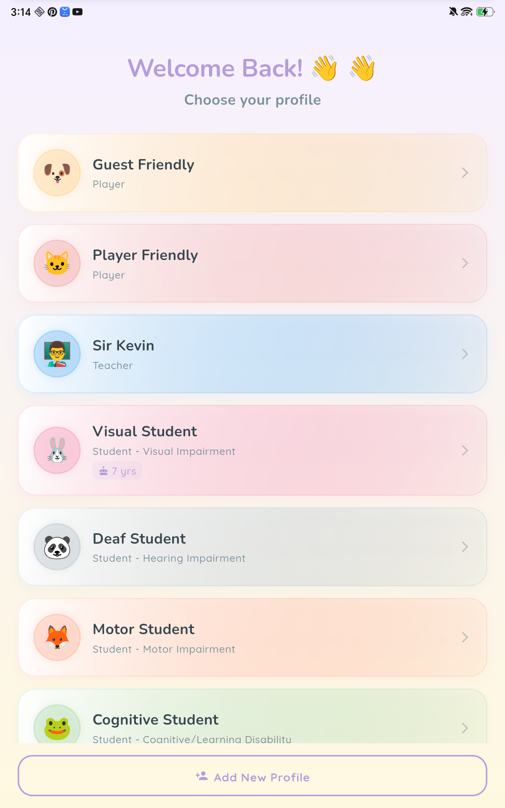

Choose or create a profilePumili o gumawa ng profile
When the app opens, pick your profile — or tap Add New Profile to make one. There's no password or email needed.Kapag bumukas ang app, piliin ang iyong profile — o i-tap ang Add New Profile para gumawa. Walang kailangang password o email.
- Player — jump straight in and start learning.Player — diretsong pasok at magsimulang matuto.
- Student — links to a teacher's class and can note a disability (visual, hearing, motor, cognitive, or multiple) so the whole app adapts automatically.Student — nakakabit sa klase ng guro at maaaring itala ang kapansanan (paningin, pandinig, motor, kognitibo, o maramihan) para awtomatikong umangkop ang buong app.
- Teacher / Parent — manage classes, see reports, and guide learners.Teacher / Parent — pamahalaan ang klase, tingnan ang reports, at gabayan ang mga mag-aaral.